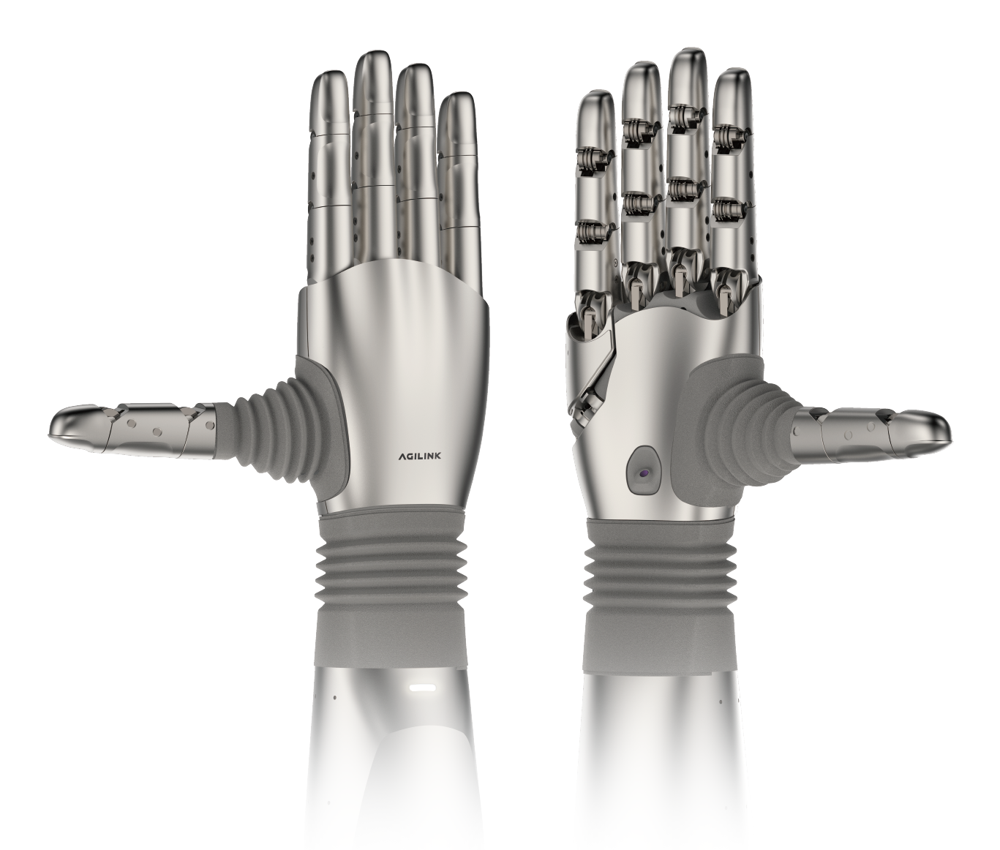
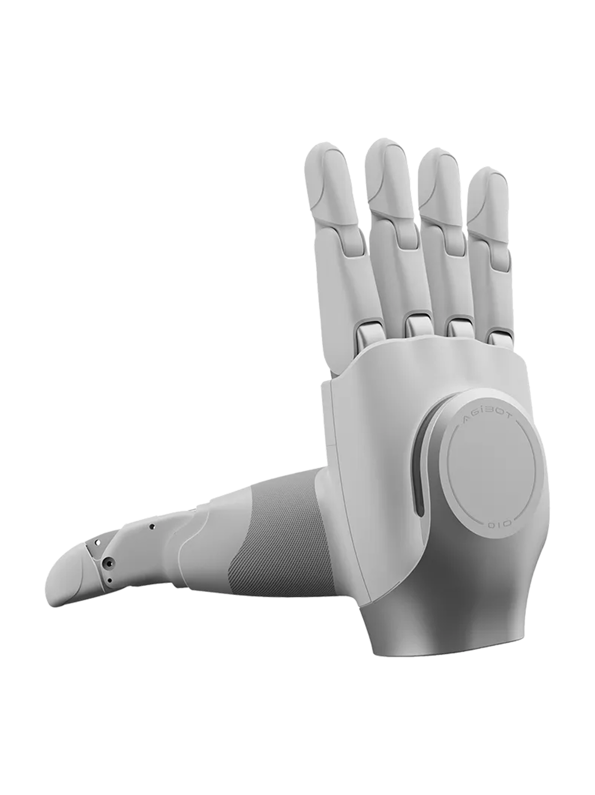
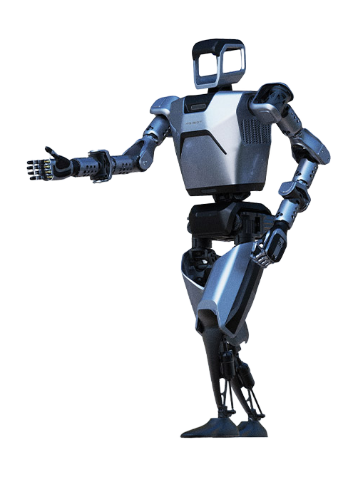

OmniHand 3 Ultra-T
Agibot OmniHand 3 Ultra-T is a robot hand from China, announced 2026.
Sources retrieved: (A, B)
- Applications
- Indicative price
- Not stated

Manufacturer's own photo.
Specifications
4 of 18 stated 14 not stated
14 fields hidden
How to read the figuresShow guideClose
- not statedNo source
- noyesStated by a source
- 0Reported as zero
- ASource
- A*Source with a caveat (select it)
- CERecords only what the manufacturer states regarding CE marking.
Select a source marker for source details and notes.
The hand1/4 disclosed
Performance1/4 disclosed
Physical1/2 disclosed
Sensing and connectivity1/3 disclosed
Commercial0/1 disclosed
Compliance & certifications0/4 disclosed
Against the field
Each strip holds every robot of this type in the guide that states the figure, one bar per group of values. Further right means a larger figure, not a better robot. A taller bar means more robots in that group.
Weight
500g1.1lbOur conversion from 500 g. The manufacturer does not state an imperial figure itself, so the conversion has no source of its own.
62 robot hands state a weight
47 state a higher figure, 10 a lower one. 4 state only a bound (≥ or ≤) and are not ranked. Log scale: each step along the axis multiplies the value.
Active degrees of freedom
22DoF
69 robot hands state degrees of freedom
1 states a higher figure, 62 a lower one. 5 more state exactly the same figure.
Notes
Presented under AGIBOT's AGILINK brand as a “Flagship tendon-driven dexterous hand” with an in-palm camera and 0.3 s cycle time, unveiled on 17 April 2026.
Intended use, per the manufacturer. “it enables precise manipulation across industrial assembly, domestic tasks, and multi-axis operations.”
Sources
One line per source, not per figure: a source has one retrieval date.
- Aagilink-ai.com/omni-hand3-ultra-t.htmlMain source. Retrieved
- Bagibot.com/news/newsroom/agibot-unveils-new-generation-of-embodie-63Retrieved
More robots
Same manufacturer

OmniHand 3Agibot

OmniHand 3 Lite-SAgibot

OmniHand 3 Ultra-MAgibot

A2 LiteAgibotHumanoid

A2 UltraAgibotHumanoid

A2-MaxAgibotHumanoid